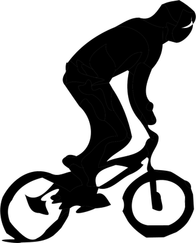

Getting Started
Want to get started in BMX racing? Follow these steps:
Contact a club and find out when their club night races are held. This will give you an idea of when you can ride competitively. West Auckland BMX races on Friday nights, rider registration starts at 5.30pm, racing starts normally around 6:45pm. Richard Fox is the guy to contact - call him on 021 468 463, or email him at rdhfoxy@hotmail.com. The BMX racing season in NZ runs from Sept through till May (with some movement either side of those dates sometimes).